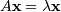
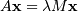
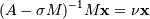
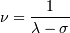
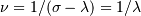
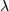
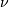
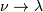
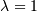

Sparse Eigenvalue Problems with ARPACK¶
Introduction¶
ARPACK is a Fortran package which provides routines for quickly finding a few eigenvalues/eigenvectors of large sparse matrices. In order to find these solutions, it requires only left-multiplication by the matrix in question. This operation is performed through a reverse-communication interface. The result of this structure is that ARPACK is able to find eigenvalues and eigenvectors of any linear function mapping a vector to a vector.
All of the functionality provided in ARPACK is contained within the two high-level interfaces scipy.sparse.linalg.eigs and scipy.sparse.linalg.eigsh. eigs provides interfaces to find the eigenvalues/vectors of real or complex nonsymmetric square matrices, while eigsh provides interfaces for real-symmetric or complex-hermitian matrices.
Basic Functionality¶
ARPACK can solve either standard eigenvalue problems of the form

or general eigenvalue problems of the form

The power of ARPACK is that it can compute only a specified subset of eigenvalue/eigenvector pairs. This is accomplished through the keyword which. The following values of which are available:
- which = 'LM' : Eigenvalues with largest magnitude (eigs, eigsh), that is, largest eigenvalues in the euclidean norm of complex numbers.
- which = 'SM' : Eigenvalues with smallest magnitude (eigs, eigsh), that is, smallest eigenvalues in the euclidean norm of complex numbers.
- which = 'LR' : Eigenvalues with largest real part (eigs)
- which = 'SR' : Eigenvalues with smallest real part (eigs)
- which = 'LI' : Eigenvalues with largest imaginary part (eigs)
- which = 'SI' : Eigenvalues with smallest imaginary part (eigs)
- which = 'LA' : Eigenvalues with largest algebraic value (eigsh), that is, largest eigenvalues inclusive of any negative sign.
- which = 'SA' : Eigenvalues with smallest algebraic value (eigsh), that is, smallest eigenvalues inclusive of any negative sign.
- which = 'BE' : Eigenvalues from both ends of the spectrum (eigsh)
Note that ARPACK is generally better at finding extremal eigenvalues: that is, eigenvalues with large magnitudes. In particular, using which = 'SM' may lead to slow execution time and/or anomalous results. A better approach is to use shift-invert mode.
Shift-Invert Mode¶
Shift invert mode relies on the following observation. For the generalized eigenvalue problem
it can be shown that

where

Examples¶
Imagine you’d like to find the smallest and largest eigenvalues and the corresponding eigenvectors for a large matrix. ARPACK can handle many forms of input: dense matrices such as numpy.ndarray instances, sparse matrices such as scipy.sparse.csr_matrix, or a general linear operator derived from scipy.sparse.linalg.LinearOperator. For this example, for simplicity, we’ll construct a symmetric, positive-definite matrix.
>>> import numpy as np
>>> from scipy.linalg import eigh
>>> from scipy.sparse.linalg import eigsh
>>> np.set_printoptions(suppress=True)
>>>
>>> np.random.seed(0)
>>> X = np.random.random((100,100)) - 0.5
>>> X = np.dot(X, X.T) #create a symmetric matrix
We now have a symmetric matrix X with which to test the routines. First compute a standard eigenvalue decomposition using eigh:
>>> evals_all, evecs_all = eigh(X)
As the dimension of X grows, this routine becomes very slow. Especially if only a few eigenvectors and eigenvalues are needed, ARPACK can be a better option. First let’s compute the largest eigenvalues (which = 'LM') of X and compare them to the known results:
>>> evals_large, evecs_large = eigsh(X, 3, which='LM')
>>> print evals_all[-3:]
[ 29.1446102 30.05821805 31.19467646]
>>> print evals_large
[ 29.1446102 30.05821805 31.19467646]
>>> print np.dot(evecs_large.T, evecs_all[:,-3:])
[[-1. 0. 0.]
[ 0. 1. 0.]
[-0. 0. -1.]]
The results are as expected. ARPACK recovers the desired eigenvalues, and they match the previously known results. Furthermore, the eigenvectors are orthogonal, as we’d expect. Now let’s attempt to solve for the eigenvalues with smallest magnitude:
>>> evals_small, evecs_small = eigsh(X, 3, which='SM')
scipy.sparse.linalg.eigen.arpack.arpack.ArpackNoConvergence:
ARPACK error -1: No convergence (1001 iterations, 0/3 eigenvectors converged)
Oops. We see that as mentioned above, ARPACK is not quite as adept at finding small eigenvalues. There are a few ways this problem can be addressed. We could increase the tolerance (tol) to lead to faster convergence:
>>> evals_small, evecs_small = eigsh(X, 3, which='SM', tol=1E-2)
>>> print evals_all[:3]
[ 0.0003783 0.00122714 0.00715878]
>>> print evals_small
[ 0.00037831 0.00122714 0.00715881]
>>> print np.dot(evecs_small.T, evecs_all[:,:3])
[[ 0.99999999 0.00000024 -0.00000049]
[-0.00000023 0.99999999 0.00000056]
[ 0.00000031 -0.00000037 0.99999852]]
This works, but we lose the precision in the results. Another option is to increase the maximum number of iterations (maxiter) from 1000 to 5000:
>>> evals_small, evecs_small = eigsh(X, 3, which='SM', maxiter=5000)
>>> print evals_all[:3]
[ 0.0003783 0.00122714 0.00715878]
>>> print evals_small
[ 0.0003783 0.00122714 0.00715878]
>>> print np.dot(evecs_small.T, evecs_all[:,:3])
[[ 1. 0. 0.]
[-0. 1. 0.]
[ 0. 0. -1.]]
We get the results we’d hoped for, but the computation time is much longer. Fortunately, ARPACK contains a mode that allows quick determination of non-external eigenvalues: shift-invert mode. As mentioned above, this mode involves transforming the eigenvalue problem to an equivalent problem with different eigenvalues. In this case, we hope to find eigenvalues near zero, so we’ll choose sigma = 0. The transformed eigenvalues will then satisfy , so our small eigenvalues  become large eigenvalues .
>>> evals_small, evecs_small = eigsh(X, 3, sigma=0, which='LM')
>>> print evals_all[:3]
[ 0.0003783 0.00122714 0.00715878]
>>> print evals_small
[ 0.0003783 0.00122714 0.00715878]
>>> print np.dot(evecs_small.T, evecs_all[:,:3])
[[ 1. 0. 0.]
[ 0. -1. -0.]
[-0. -0. 1.]]
We get the results we were hoping for, with much less computational time. Note that the transformation from  takes place entirely in the background. The user need not worry about the details.
The shift-invert mode provides more than just a fast way to obtain a few small eigenvalues. Say you desire to find internal eigenvalues and eigenvectors, e.g. those nearest to . Simply set sigma = 1 and ARPACK takes care of the rest:
>>> evals_mid, evecs_mid = eigsh(X, 3, sigma=1, which='LM')
>>> i_sort = np.argsort(abs(1. / (1 - evals_all)))[-3:]
>>> print evals_all[i_sort]
[ 1.16577199 0.85081388 1.06642272]
>>> print evals_mid
[ 0.85081388 1.06642272 1.16577199]
>>> print np.dot(evecs_mid.T, evecs_all[:,i_sort])
[[-0. 1. 0.]
[-0. -0. 1.]
[ 1. 0. 0.]]
The eigenvalues come out in a different order, but they’re all there. Note that the shift-invert mode requires the internal solution of a matrix inverse. This is taken care of automatically by eigsh and eigs, but the operation can also be specified by the user. See the docstring of scipy.sparse.linalg.eigsh and scipy.sparse.linalg.eigs for details.
References¶
| [1] | http://www.caam.rice.edu/software/ARPACK/ |